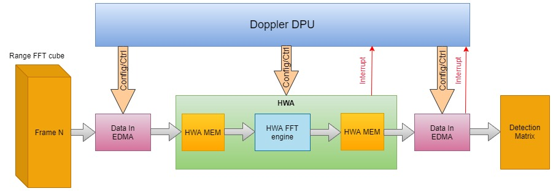
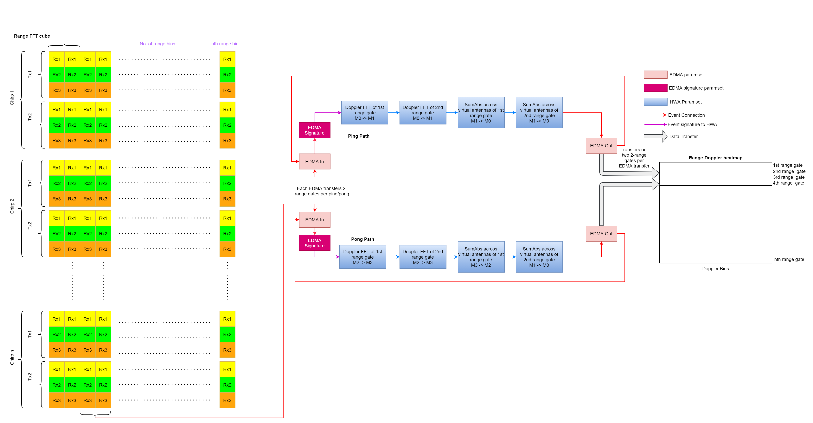

The Dopplerproc or Doppler processing does the 2nd dimension FFT after Range FFT in the frame idle time per each antenna which translates to velocity measurements.
Introduction
The Doppler processing DPU does the 2nd dimension FFT after Range FFT in the frame idle time per each antenna followed by summing the absolute values taken across the antenna dimension to store the range-doppler heatmap. The doppler DPU implemented stores only the range-doppler heatmap and not the entire cube after 2D-FFT.
Block Diagram
The top-level diagram of the Doppler DPU is shown below:

Doppler processing DPU top-level diagram
Doppler DPU functioning
The HWA processes data in the loop in a ping pong fashion with 4-range gates processed per loop (2-range gates per ping/pong path). Two range gates (complex 16-bit input range bin) are taken per ping/pong path considering 64-bit interconnect (to fill the bus fully for efficient transfer) between HWA memory and HWA_SS shared RAM. The input EDMA reads data from the radar cube (all chirps and antennas of the current 2-range gates) and copies to the HWA memory in linear fashion (top to bottom along the chirp dimension). There are 4-paramsets in each ping/pong path which perform the following functions:
- Doppler FFT per antenna for 1st range gate,
- Doppler FFT per antenna for 2nd range gate,
- Sum of Abs across virtual antennas for the 1st range gate,
- Sum of Abs across virtual antennas for the 2nd range gate, The output of the Doppler DPU is the detection matrix (range-Doppler heatmap) with dimensions [num of range bins x num of Doppler bins]. Note that the detection matrix is stored in M4F RAM for feature extraction process, AoA DPU computations and effective memory usage in xWRLx432 devices.
The detailed diagram (functioning) of the Doppler DPU is shown below:

Doppler processing DPU detailed diagram
Usage Overview
API
To exercise the DPU functionalities, the application shall call the following APIs in sequence
Example Usage
Include the below file to access the APIs
DPU Initialization Example
void dopplerProcDpuTest_dpuInit()
{
int32_t errorCode = 0;
if (dopplerProcDpuHandle == NULL)
{
DebugP_log (
"Debug: Doppler Proc DPU initialization returned error %d\n", errorCode);
return;
}
}
DPU Configuration Parsing Example
params->numTxAntennas = testConfig->numTxAntennas;
params->numRxAntennas = testConfig->numRxAntennas;
params->numVirtualAntennas = testConfig->numTxAntennas * testConfig->numRxAntennas;
params->numRangeBins = testConfig->numRangeBins;
params->numDopplerChirps = testConfig->numDopplerChirps;
params->log2NumDopplerBins = HWAFFT_log2Approx(params->numDopplerChirps);
params->numDopplerBins = pow(2,params->log2NumDopplerBins);
params->doppFFT_is16b = 0;
pHwConfig->hwaCfg.
windowSize =
sizeof(uint32_t) * ((params->numDopplerBins + 1) / 2);
pHwConfig->radar_1D_FFT_Cube.dataSize = testConfig->numRangeBins * testConfig->numTxAntennas * testConfig->numRxAntennas * sizeof(cmplx16ReIm_t) * params->numDopplerChirps;
pHwConfig->detMatrix.dataSize = params->numRangeBins * params->numDopplerBins * sizeof(cmplx16ReIm_t);
pHwConfig->edmaCfg.edmaIn.ping.channel = DPC_OBJDET_DPU_DOPPLERPROC_EDMAIN_CH_PING;
pHwConfig->edmaCfg.edmaIn.pong.channel = DPC_OBJDET_DPU_DOPPLERPROC_EDMAIN_CH_PONG;
pHwConfig->edmaCfg.edmaIn.ping.channelShadow = DPC_OBJDET_DPU_DOPPLERPROC_EDMAIN_SHADOW_PING;
pHwConfig->edmaCfg.edmaIn.pong.channelShadow = DPC_OBJDET_DPU_DOPPLERPROC_EDMAIN_SHADOW_PONG;
pHwConfig->edmaCfg.edmaIn.ping.eventQueue = DPC_OBJDET_DPU_DOPPLERPROC_EDMAIN_EVENT_QUE_PING;
pHwConfig->edmaCfg.edmaIn.pong.eventQueue = DPC_OBJDET_DPU_DOPPLERPROC_EDMAIN_EVENT_QUE_PONG;
pHwConfig->edmaCfg.edmaHotSig.ping.channel = DPC_OBJDET_DPU_DOPPLERPROC_EDMAIN_SIG_CH_PING;
pHwConfig->edmaCfg.edmaHotSig.pong.channel = DPC_OBJDET_DPU_DOPPLERPROC_EDMAIN_SIG_CH_PONG;
pHwConfig->edmaCfg.edmaHotSig.ping.channelShadow = DPC_OBJDET_DPU_DOPPLERPROC_EDMAIN_SIG_SHADOW_PING;
pHwConfig->edmaCfg.edmaHotSig.pong.channelShadow = DPC_OBJDET_DPU_DOPPLERPROC_EDMAIN_SIG_SHADOW_PONG;
pHwConfig->edmaCfg.edmaHotSig.ping.eventQueue = DPC_OBJDET_DPU_DOPPLERPROC_EDMAIN_SIG_EVENT_QUE_PING;
pHwConfig->edmaCfg.edmaHotSig.pong.eventQueue = DPC_OBJDET_DPU_DOPPLERPROC_EDMAIN_SIG_EVENT_QUE_PING;
pHwConfig->intrObj = &intrObj;
pHwConfig->edmaCfg.edmaOutDetectionMatrix.ping.channel = DPC_OBJDET_DPU_DOPPLERPROC_EDMAOUT_DETMATRIX_PING_CH;
pHwConfig->edmaCfg.edmaOutDetectionMatrix.pong.channel = DPC_OBJDET_DPU_DOPPLERPROC_EDMAOUT_DETMATRIX_PONG_CH;
pHwConfig->edmaCfg.edmaOutDetectionMatrix.ping.channelShadow = DPC_OBJDET_DPU_DOPPLERPROC_EDMAOUT_DETMATRIX_PING_SHADOW;
pHwConfig->edmaCfg.edmaOutDetectionMatrix.pong.channelShadow = DPC_OBJDET_DPU_DOPPLERPROC_EDMAOUT_DETMATRIX_PONG_SHADOW;
pHwConfig->edmaCfg.edmaOutDetectionMatrix.ping.eventQueue = DPC_OBJDET_DPU_DOPPLERPROC_EDMAOUT_DETMATRIX_PING_EVENT_QUE;
pHwConfig->edmaCfg.edmaOutDetectionMatrix.pong.eventQueue = DPC_OBJDET_DPU_DOPPLERPROC_EDMAOUT_DETMATRIX_PONG_EVENT_QUE;
pHwConfig->hwaCfg.paramSetStartIdx = 0;
pHwConfig->hwaCfg.winRamOffset = DPC_OBJDET_HWA_WINDOW_RAM_OFFSET;
pHwConfig->hwaCfg.winSym = 1;
pHwConfig->hwaCfg.dmaTrigSrcPingChan = 0;
pHwConfig->hwaCfg.dmaTrigSrcPongChan = 1;
pHwConfig->edmaCfg.edmaHandle = gEdmaHandle[0];
dopplerProcDpuCfg.hwRes.hwaCfg.window = (int32_t *)&window2DCoef[0];
dopplerProcDpuCfg.hwRes.radar_1D_FFT_Cube.data = (void *)rangeFFT;
dopplerProcDpuCfg.hwRes.detMatrix.data = (uint32_t *) &detMatrix[0];
DPU Configuration Example
if(retVal < 0)
{
DebugP_log(
"DEBUG: DOPPLER DPU config return error:%d \n", retVal);
}
DPU Process Trigger Example
if(retVal < 0)
{
DebugP_log(
"DEBUG: DOPPLER DPU process return error:%d \n", retVal);
}
DPU Close Example
if(retVal < 0)
{
DebugP_log(
"DEBUG: Doppler DPU deinit return error:%d \n", retVal);
}
Refer to the document - Gesture_Recognition_Demo_documentation.pdf, in the SDK docs folder, for more details.
 1.8.20
1.8.20